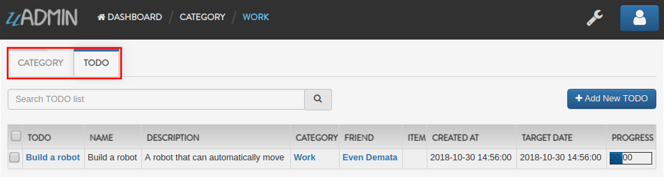
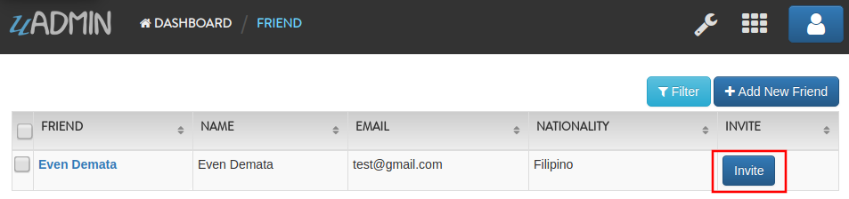
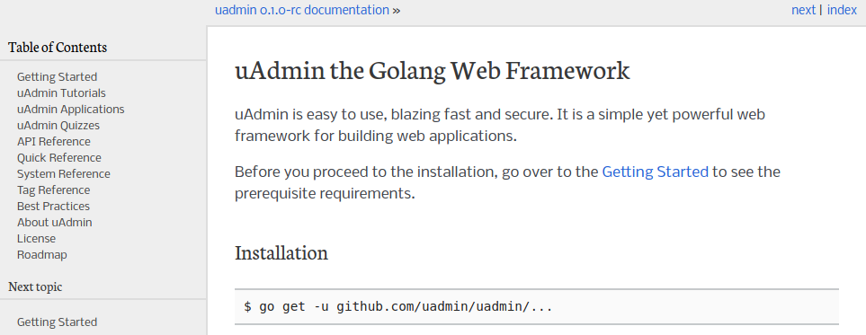

uAdmin Tutorial Part 4 - Register Inlines and Drop Down List¶
Inlines is where we keep all registered models’ inlines. It allows you to merge a parent model to a submodel where the foreign key(s) are specified.
Why do we use Register inlines? We use them to show that the field of a model is related to another model as long as there is a foreign key specified.
Syntax:
uadmin.RegisterInlines(/folder_name/./struct_name of a parent model/{}, map[string]string{
"/sub_model name/": "/parent_model name/ID",
})
Now let’s apply it in the main.go. Copy the codes below and paste it after the uadmin.Register function.
uadmin.RegisterInlines(models.Category{}, map[string]string{
"Todo": "CategoryID",
})
uadmin.RegisterInlines(models.Friend{}, map[string]string{
"Todo": "FriendID",
})
Let’s run the application and see what happens.
Tada! The parent model Todo is now included in the Category submodel as shown above. You can go to Friends and Items models and it will display the same result.
We can also do that in internal models by replacing the path to (folder_name).(struct_name).
// Todo model ...
type Todo struct {
uadmin.Model
Name string
Description string `uadmin:"html"`
Category models.Category // <-- replaced from Category to models.Category
CategoryID uint
Friend models.Friend // <-- replaced from Category to models.Friend
FriendID uint
TargetDate time.Time
Progress int `uadmin:"progress_bar"`
}
// Some codes are contained in this line ... (ignore this part)
uadmin.Register(
Todo{}, // <-- calling internal model
models.Category{},
models.Friend{},
)
When you run the application, it will still work as expected.
Drop Down List in a Field¶
Go to the friend.go in the models folder. Let’s manually add a drop down list selection in the Nationality field. In order to do that, initialize a variable with the type int. Create a function that will set an element and return the integer value inside it. One function is equivalent to one element. Put it above the Friend model.
// Nationality ...
type Nationality int
// Chinese ...
func (n Nationality) Chinese() Nationality {
return 1
}
// Filipino ...
func (n Nationality) Filipino() Nationality {
return 2
}
// Others ...
func (n Nationality) Others() Nationality {
return 3
}
// Friend model ...
type Friend struct {
// Some codes contained inside
}
Now inside the Friend model, initialize a Nationality field so that it will be created.
// Friend model ...
type Friend struct {
uadmin.Model
Name string `uadmin:"required"`
Email string `uadmin:"email"`
Password string `uadmin:"password;list_exclude"`
Nationality Nationality // <-- place it here
}
Output

We can also add an Invite field that will direct you to his website. In order to do that, set the field name as “Invite” with the tag “link”.
// Friend model ...
type Friend struct {
uadmin.Model
Name string `uadmin:"required"`
Email string `uadmin:"email"`
Password string `uadmin:"password;list_exclude"`
Nationality Nationality
Invite string `uadmin:"link"` // <-- place it here
}
To make it functional, add the overriding save function after the Friend struct.
// Save !
func (f *Friend) Save() {
f.Invite = "https://uadmin.io/"
uadmin.Save(f)
}
Run your application, go to the Friends model and update the elements inside. Afterwards, click the Invite button on the output structure and see what happens.
Result
Congrats, you know now how to do the following:
- Register Inlines
- Adding drop down list manually to a field
- How to use “link” tag in our project
- Applying override save function
In the next part we will talk about applying different uadmin tags through our project.